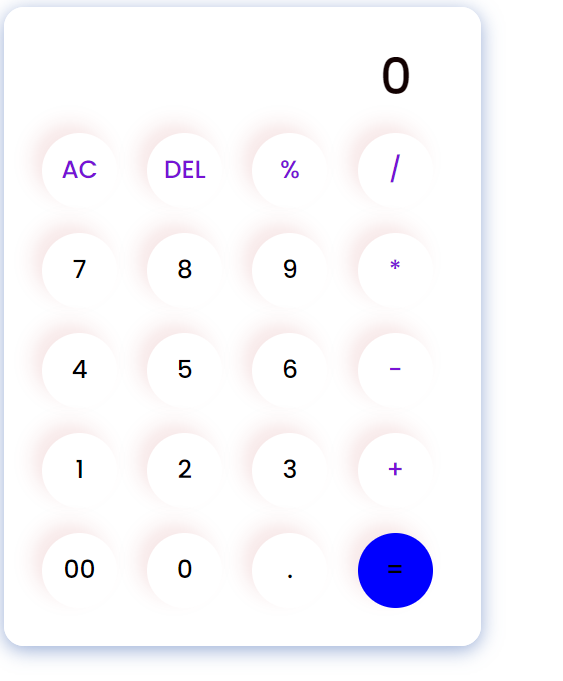
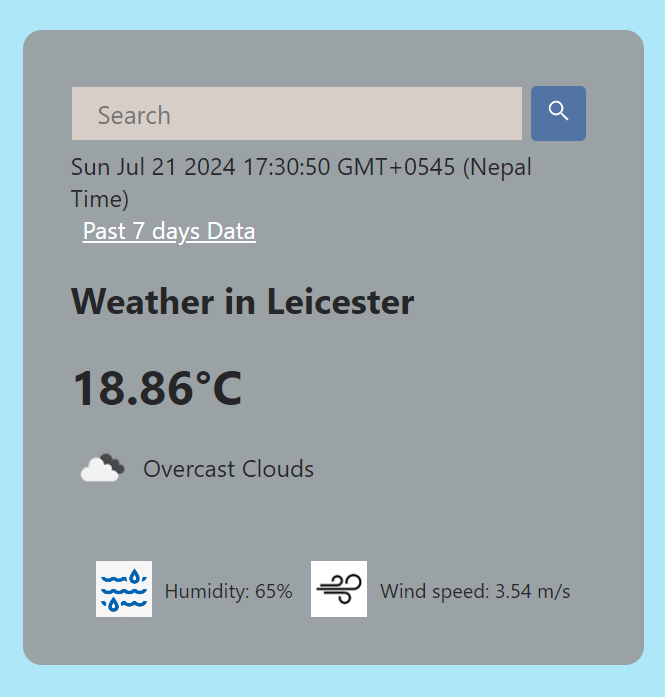

More About Me
I am Akriti Kumari Dev, an enthusiastic computer science student. My journey into computer science began with a fascination for technology and its potential to solve real-world problems. This passion led me to pursue a Bachelor's degree in Computer Science at Herald College Kathmandu. Throughout my academic career, I have developed a strong foundation in various programming languages such as Python, Java, and JavaScript, and I enjoy building user-friendly web interfaces using HTML and CSS. Outside of my studies, I have actively participated in several extracurricular activities and projects. I have led multiple student projects, and volunteered for community service. These experiences have not only enhanced my technical skills but also taught me the importance of effective communication, time management, and teamwork. In addition to my academic and extracurricular pursuits, I have a deep love for music, sports, and traveling. I am always eager to learn and take on new challenges. My goal is to continue developing my skills and knowledge to make a positive impact in the field of technology and beyond.
Projects
1. Course Management System
I developed a comprehensive course management system as a project for my college studies. This system allows students to register for courses, enroll in modules, and view their academic progress. Administrators can manage course offerings, add or cancel courses, and generate result slips detailing student performance. Instructors can view their assigned modules, record student marks, and manage their teaching assignments. The system persists data in a database, ensuring all information is securely stored and accessible across sessions.
Features:- Course Registration: Students can easily register for courses they wish to study.
- Module Enrollment: Students enroll in specific modules required for their chosen courses.
- Administrator Tools: Administrators can add new courses, manage module assignments, and generate detailed result slips for students.
- Instructor Management: Instructors view their teaching assignments, record student grades, and manage their modules.
- Progress Tracking: The system tracks student progress through their courses and modules, ensuring they meet academic requirements.
- Database Persistence: All data is securely stored in a database, ensuring reliability and accessibility.
Course Management System Gallery


2. Calculator
I created a simple calculator application that performs basic arithmetic operations. This project helped me solidify my understanding of JavaScript and its application in real-world projects.
Features:- Basic Operations: Supports addition, subtraction, multiplication, and division.
- Clear Function: Ability to clear the current input and start a new calculation.
- Responsive Design: The calculator interface is designed to be responsive and user-friendly.
Calculator Image
3. Weather App
I developed a weather application that provides current weather information based on the user's location. This project enhanced my skills in working with APIs and handling asynchronous JavaScript operations.
Features:- Current Weather: Displays the current weather conditions for the user's location.
- Location-based Service: Automatically detects the user's location using geolocation.
- API Integration: Fetches weather data from a public API to ensure accurate and up-to-date information.
- Responsive Design: The app is designed to be responsive and accessible on various devices.
Weather App Image
Certifications and Awards
- Project Management Certificate :
Completed a comprehensive course on Project Management through Great Learning, covering key aspects such as project planning, risk management, and team leadership. This certification has equipped me with the skills necessary to effectively manage projects, ensuring they are completed on time and within budget.